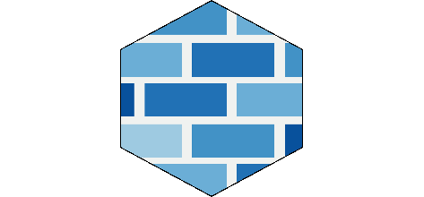

Sophos Firewall

Die Sophos-Firewall (vorher Sophos-XG-Firewall) ist ein Sicherheitsprodukt von Sophos zum Absichern von Netzwerken. Das Buch Einstieg in die Sophos Firewall führt den Leser Schritt für Schritt in die Bedienung ein und beschreibt Szenarien aus der Praxis.